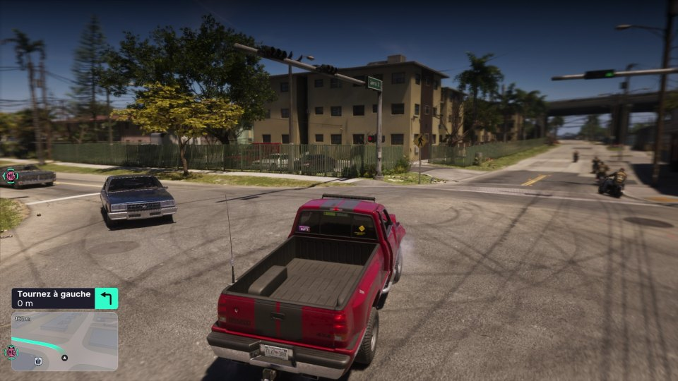
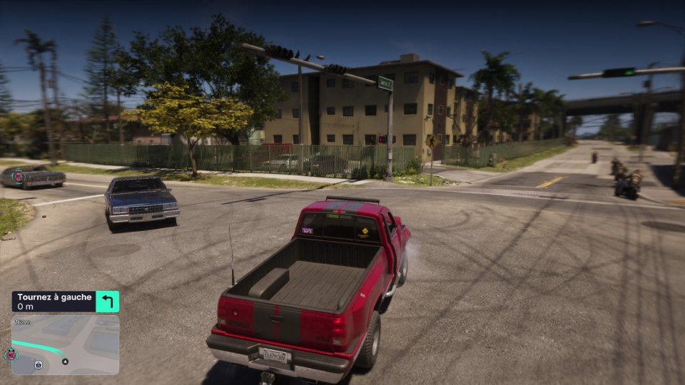
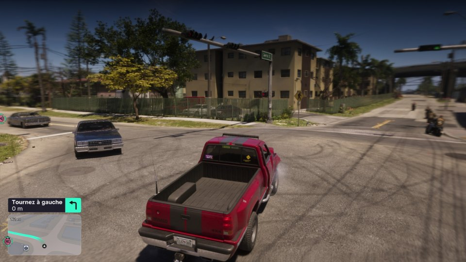
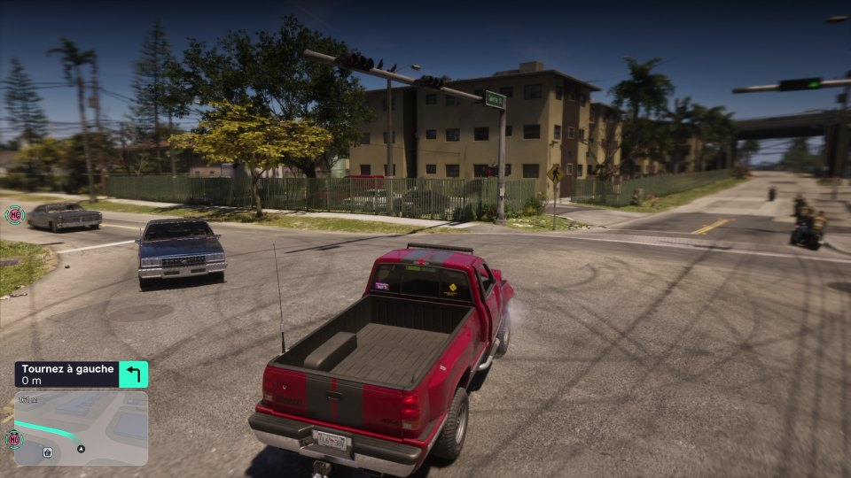

30 fps in.
90 fps out.
Capture Smooth reads your capture card and generates new frames between the real ones on your PC's graphics card. Any console, any game, no mod.
Drag to see the difference
Same gameplay, same moment. Left: what the console sends. Right: Capture Smooth. Look at the scenery when the camera turns.
Left half: what the console sends. Right half: Capture Smooth, on the same picture.
Up to 3× the frame rate
Measured on an RTX 4070 SUPER with the console in 4K, captured at 1440p.
30 fps game
60 fps game
| Game | Mode | Displayed | AI per frame | Added latency |
|---|---|---|---|---|
| 30 fps | ×3 · CUDA | 90 fps | 7 ms | ~32 ms |
| 30 fps | ×2 · CUDA | 60 fps | 7 ms | ~26 ms |
| 60 fps | ×2 · CUDA | 120 fps | 8 ms | ~19 ms |
| 30 fps | ×3 · DirectML | 90 fps | 15 ms | ~45 ms |
Two AI frames between every real one
The network estimates how every pixel moves between two game frames, then draws the frames in between. Every 33 ms, three frames instead of one.




Built for gaming. Tuned for latency.
AI frame generation
RIFE 4.6, a state-of-the-art interpolation network. It needs nothing from the game, so it works on any video feed.
Duplicate detection
A 30 fps game in a 60 Hz signal sends every frame twice. Copies are skipped, so AI frames only go between real ones.
Low latency
Motion estimated at half resolution, the AI step recorded as one CUDA graph, frames paced evenly, late ones dropped.
NVIDIA or any GPU
A CUDA engine for GeForce cards, and a DirectML engine for any DirectX 12 card: AMD Radeon, Intel Arc, older NVIDIA.
Game sound included
The capture card's audio plays on your speakers, with an optional delay to stay in sync with the picture.
One-click setup
Double-click, pick your console's output and the game's frame rate, press Start. Borderless full screen, fps counter on F1.
From your console to your screen
Console
PS5, Xbox or Switch, any game. Nothing to install on it.
Capture card
HDMI in, USB to the PC. 1080p or 1440p at 60 Hz.
Capture Smooth
- Skips duplicated frames
- Estimates the motion (RIFE)
- Draws 1 or 2 frames in between
Your screen
60, 90 or 120 fps, evenly paced, with sound.
Get Capture Smooth
Windows 10 or 11, a capture card and a graphics card. Unzip, double-click the exe, play.
NVIDIA GeForce
- GTX 10 series or newer, recent driver
- CUDA engine: 7 ms per AI frame, ~32 ms at 90 fps
- 2.8 GB in two parts: extract both into the same folder
DirectML
- AMD Radeon, Intel Arc, NVIDIA
- Light: a single 114 MB download
- About twice slower than CUDA on NVIDIA cards
Close OBS
OBS and your capture card's software lock the device. Close them before starting.
Pick your settings
Double-click the exe. Choose the resolution your console really outputs and your game's frame rate.
Play
Press Start. Esc quits, Space turns the AI on and off so you can compare.
Questions
Is this like DLSS 3 frame generation?
Same idea, different source. DLSS 3 uses motion data from the game engine; Capture Smooth only sees the video, so it estimates the motion itself with RIFE. That is what lets it work with a console, which no PC tool can patch.
Does it add input lag?
A little: about 32 ms at 90 fps and 19 ms for a 60 fps game shown at 120 fps. An in-between frame needs the next real frame, so some delay is unavoidable. For competitive shooters, use ×2 or turn the AI off with Space.
Which capture cards work?
Any card Windows sees as a camera (USB video class or DirectShow): Elgato HD60 X, 4K X, Cam Link, AVerMedia Live Gamer, and most generic HDMI-to-USB cards. It was developed on an Elgato HD60 X.
My console refuses 1440p. What can I do?
The console only offers resolutions supported by the screen plugged into the card's HDMI passthrough. In your capture card's software, set the EDID to "internal", unplug and plug the console again, and 1440p (or 4K) appears. A 4K output works too: the card downscales it.
Why do I get a black screen or "invalid resolution"?
Capture cards cannot upscale. If you choose 1440p while the console sends 1080p, the card shows an error picture. Pick the resolution the console really outputs.
Is it really free?
Yes. The code is MIT licensed, the AI model (RIFE) is MIT licensed, and there is nothing to buy or sign up for.